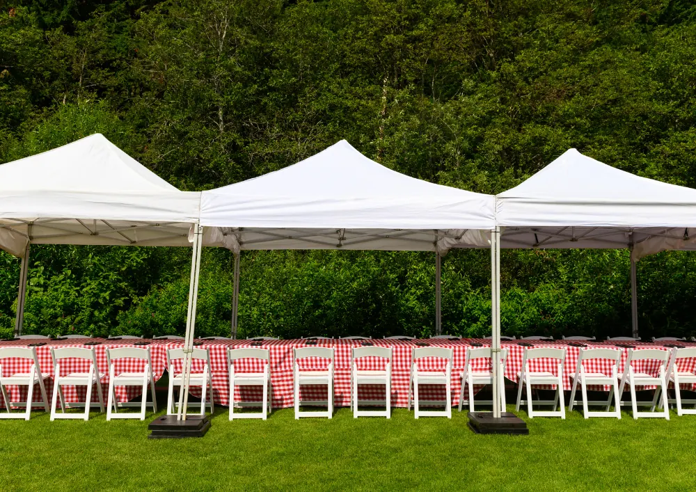

Tenten voor cultuur en buurtactiviteiten in Nijmegen
Gepubliceerd op 30 juni 2026
Onderdeel van de gids Zaal huren in Nijmegen

Nijmegen bruist het hele jaar door van cultuur. Van openluchtconcerten aan de Waalkade en kleinschalige kunstmarkten in het centrum tot de grote publieksstromen tijdens de Vierdaagsefeesten: veel initiatieven hebben een stevige praktische basis nodig. Bezoekers willen droog staan, techniek moet veilig kunnen draaien en je wilt kunnen opschalen als het drukker wordt dan verwacht. Een goede tent helpt daarbij.
Waarom een tent vaak het verschil maakt
Met een tent creëer je snel een herkenbare ontmoetingsplek. Denk aan een overdekte foyer voor een theatervoorstelling, een workshopruimte voor een buurtfestival in Nijmegen-Oost of een tijdelijke expositieruimte bij het Honigcomplex. Ook voor horeca, merchandise of informatiepunten werkt een overkapping als duidelijke ankerplek op het terrein.
Daarnaast maakt een tent je programma minder afhankelijk van het weer. In Nijmegen kan een buitenevenement in één middag omslaan van zon naar regen. Met een overdekte ruimte kunnen optredens, lezingen of kinderactiviteiten toch doorgaan.
Waar organisatoren op moeten letten
Een tent plaatsen is meer dan opbouwen en klaar. Met deze punten voorkom je last-minute stress, of je nu een buurtmiddag organiseert of een groter cultureel event:
– Locatie en ondergrond: gras, klinkers of asfalt vragen om een andere aanpak. Controleer ook obstakels zoals bomen, putten en kabels.
– Vergunning en afspraken: op pleinen en in parken is vaak toestemming nodig. Denk ook aan geluidsnormen, eindtijden en afstemming met omwonenden.
– Capaciteit en routing: hoeveel bezoekers verwacht je en hoe bewegen ze over het terrein? Duidelijke in- en uitgangen voorkomen opstoppingen.
– Toegankelijkheid: zorg voor voldoende ruimte voor rolstoelen en kinderwagens en kies waar nodig voor een vlakke vloer.
– Weer en comfort: bij frisse avonden is verwarming prettig, bij zomerse dagen juist ventilatie en schaduw.
Evenementenlocaties in Nijmegen en omgeving
Nijmegen heeft veel plekken waar tijdelijke overkappingen goed tot hun recht komen. De Waalkade is populair voor zomerse programmering en foodconcepten, terwijl het Goffertpark ruimte biedt voor grotere publieksactiviteiten. In Lent zie je steeds vaker buurtinitiatieven en kleinschalige festivals die om een flexibele opzet vragen.
Ook in de regio, zoals Wijchen en Groesbeek, worden tenten ingezet voor dorpsfeesten, sporttoernooien en culturele weekenden. Houd daarbij rekening met bereikbaarheid, fietsparkeren en een duidelijke route voor leveranciers.

Inrichting die je evenement professioneler maakt
De tent zelf is het begin. Met de juiste inrichting voelt een tijdelijke locatie al snel als een volwaardige eventruimte. Denk aan:
– vloeren voor een nette uitstraling en minder modder bij regen
– verlichting voor sfeer en veiligheid
– verwarming voor avondprogramma’s of voorjaars- en najaarsevents
– wanden of indeling voor backstage, opslag of een rustige ruimte
Voor culturele programma’s is techniek vaak een belangrijk aandachtspunt. Een stabiele plek voor licht en geluid, voldoende stroompunten en een droge opslag voor materialen maken het verschil.
Tentverhuur in Nijmegen met een partner die ontzorgt
Wie een evenement organiseert, wil vooral bezig zijn met het programma en de bezoekerservaring. Daarom kiezen veel organisatoren voor een aanpak waarbij opstelling, veiligheid en planning vanaf het begin worden meegenomen, zodat op- en afbouw en eventuele inrichting in één traject kunnen worden geregeld. Voor uiteenlopende tenttypes en een praktische, complete uitvoering past tentenverhuur goed binnen die behoefte.
Plan je een cultureel event in Nijmegen of omgeving? Maak vroeg een checklist met datum, locatie, ondergrond, verwacht bezoekersaantal en comfortwensen. Zo kun je gericht offertes vergelijken en staat je tijdelijke locatie straks net zo stevig als je programma.
Terug naar de beginpagina
BEKIJK